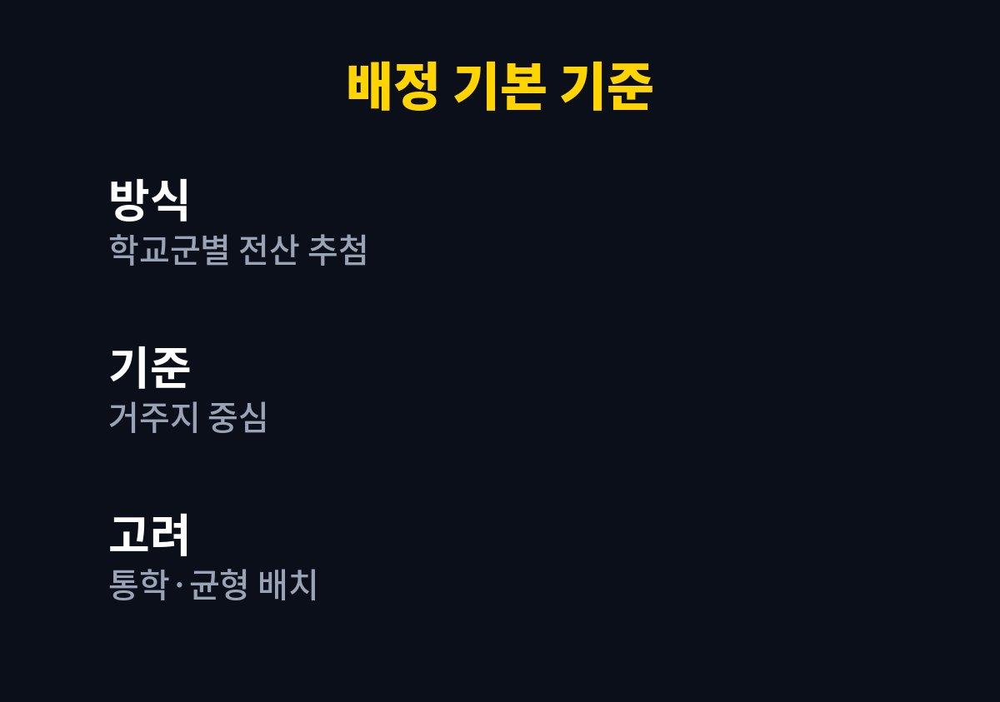
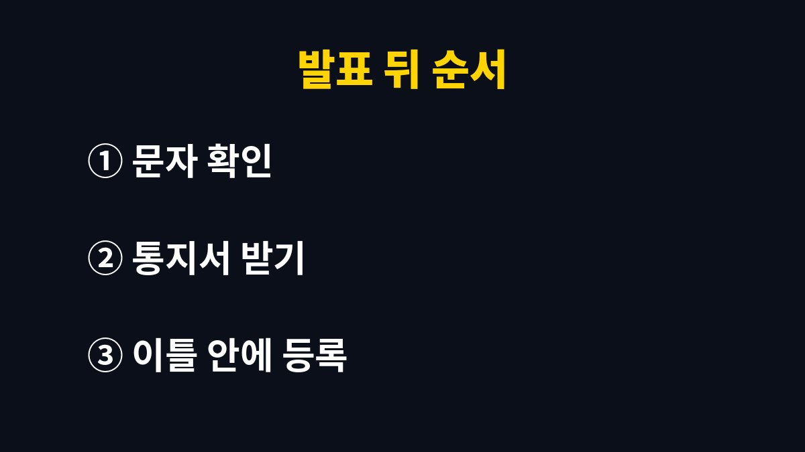

중학교 배정은 서울 기준으로 거주지 학교군 안에서 전산 추첨으로 정해지는 것이 원칙이다.
2026학년도에는 1월 29일 오전에 결과가 나왔고, 입학 등록은 1월 29일부터 30일까지 이틀뿐이었다.
초등 6학년 부모가 미리 챙길 일은 학교를 고르는 것이 아니라 원서에 적는 연락처와 발표 직후 이틀의 일정이다.
서울시교육청 보도자료에 따르면 중학교 배정은 거주지를 기준으로 한 학교군별 전산 추첨이 원칙이다.
통학 여건과 학교 간 균형 배치도 함께 반영된다.
가고 싶은 학교를 직접 골라 들어가는 방식이 아니어서 같은 동네 친구와 다른 학교에 배정될 수도 있다.
이 글의 날짜와 숫자는 서울 기준이다.
경북교육청이 2027학년도 중학교 배정체계를 개편한다고 알린 것처럼 지역에 따라 바뀌는 부분이 있다.
다른 지역에 산다면 거주지 교육지원청의 최신 공고를 먼저 본다.
배정 결과는 발표 전까지 알 수 없다.
그래서 특정 학교를 전제로 통학 경로나 준비물을 미리 정해 두면 헛수고가 되기 쉽다.
발표 뒤에 학교가 정해지면 그때 통학 거리와 등교 시간을 아이와 함께 걸어 보며 확인해도 늦지 않다.
배정 학교에 대한 소문이 걱정되더라도 학교별 공시 정보와 학교 안내를 직접 보고 판단하는 편이 낫다.
| 단계 | 2026학년도 서울 일정 | 해야 할 일 |
|---|---|---|
| 결과 발표 | 1월 29일(목) 오전 10시 | 원서에 적은 보호자 휴대전화 문자를 확인한다 |
| 배정통지서 교부 | 1월 29일(목) 10시부터 | 서울 초등학교 졸업(예정)자는 출신 초등학교에서 받는다 |
| 입학 등록 | 1월 29일(목)~30일(금) | 배정받은 중학교에서 등록한다 |
| 재배정 신청 | 2월 2일(월)~4일(수) | 전입이나 이사로 학교군이 바뀐 경우에 해당한다 |

2027학년도 날짜는 아직 확인되지 않았다.
해마다 일정이 달라지므로 위 표는 순서를 가늠하는 용도로만 본다.
예를 들어 발표 문자가 목요일 오전에 왔는데 배정통지서를 받으러 갈 시간을 내지 못하면 등록 기한인 금요일이 바로 다가온다.
직장에 다니는 부모라면 그 이틀에 연차나 반차가 필요한지 미리 따져 둔다.

출신 초등학교가 서울이 아니거나 검정고시 합격자라면 배정통지서를 관할 교육지원청에서 받는다.
받는 곳이 다르니 발표 전에 어디로 가야 하는지 확인해 둔다.
초등학교에서 나눠 주는 서류에 익숙한 부모도 이 경우에는 학교가 아닌 교육지원청 방문이나 안내를 따라야 한다.
서울시교육청은 2026학년도부터 다자녀 가정 배정 방식을 개선했다고 밝혔다.
첫째는 거주지 학교군 안에서 가장 가까운 학교를 우선 배정받고, 둘째 이상은 형제자매가 졸업한 학교에 같이 배정받을 수 있다.
거주지 이전처럼 같은 학교 배정이 어려운 경우를 위한 보완 절차도 있다.
세부 조건은 해당 가정이 교육지원청에 직접 확인한다.
추첨으로 정해지는 만큼 부모가 결과를 바꿀 방법은 많지 않고, 발표 뒤 등록 기한이 짧다는 점이 실제로 부담이 된다.
지금 할 일은 거주지 교육지원청 홈페이지에서 올해 중학교 배정 안내 공고가 올라오는 시기를 확인해 두는 것이다.
참고 자료: 서울특별시교육청 「2026학년도 중학교 신입생 배정 결과 발표」 보도자료(2026년 11월 확인)
※ 2026년 기준 공식 자료를 바탕으로 정리한 일반 정보이며, 아이의 발달이나 건강에 걱정이 있다면 소아청소년과 등 전문가와 상담하길 바란다.